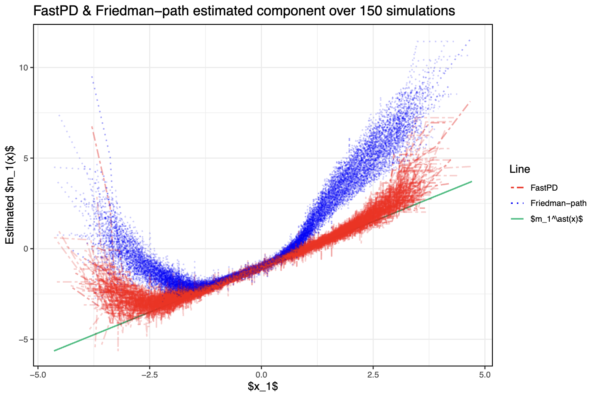

Jinyang Liu (刘锦阳)
3+5 PhD student
University of Copenhagen
Universitetsparken 5 (Department of Mathematical Sciences)
2100 Copenhagen
Universitetsparken 5 (Department of Mathematical Sciences)
2100 Copenhagen

jl (at) math.ku.dk
About
– Born on 14. August 2002 in Shenzhen, China
I am a 3+5 PhD student at the University of Copenhagen. My research interests lie in statistical learning, interpretable machine learning, and super learning. I obtained a Bachelor’s degree in Mathematics from UCPH in June 2023, with a specialization in statistics, and a strong focus on measure and probability theory.
In addition, I have experience in software engineering and DevOps. I am proficient in Python and have worked with frontend technologies such as React and Vue. I have applied these skills in developing machine learning microservices on the Google Cloud Platform.
Education
- University of Copenhagen, Sep 2023 - Aug 2028 (expected)
3+5 PhD student in statistics and machine learning
Advisor: Munir Hiabu - University of Copenhagen, Sep 2020 - June 2023
BSc in Mathematics - H.C. Ørsted Gymnasiet i Lyngby, Aug 2017 - June 2020
Danish technical high school education (HTX)
Research

Liu, J.,
Steensgaard, T.,
Wright, M.
Pfister, N.
Hiabu, M.
Fast Estimation of Partial Dependence Functions using Trees
Fast Estimation of Partial Dependence Functions using Trees
arXiv preprint,
2024.
We provide a novel and fast method for computing partial dependence funtions for tree-based prediction models such as XGBoost and Random Forests. The implementation has since been integrated in the R-package glex.
Cite Fast Estimation of Partial Dependence Functions using Trees
@misc{liu2024fastestimationpartialdependence,
title={Fast Estimation of Partial Dependence Functions using Trees},
author={Jinyang Liu and Tessa Steensgaard and Marvin N. Wright and Niklas Pfister and Munir Hiabu},
year={2024},
eprint={2410.13448},
archivePrefix={arXiv},
primaryClass={cs.LG},
url={https://arxiv.org/abs/2410.13448},
}